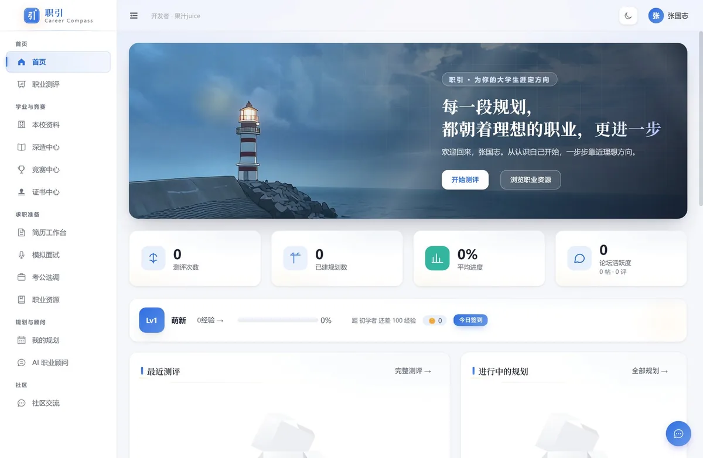
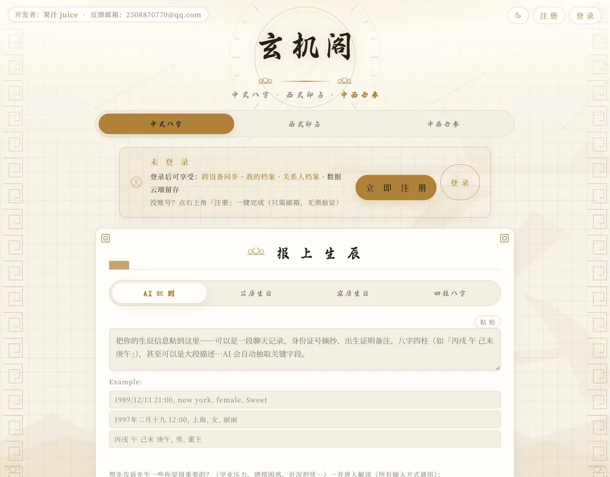
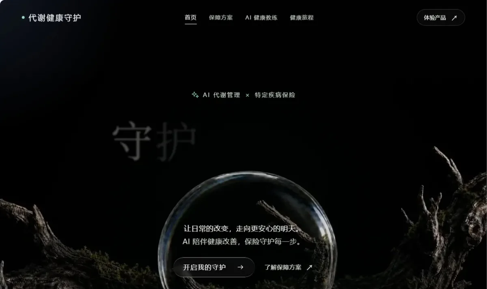
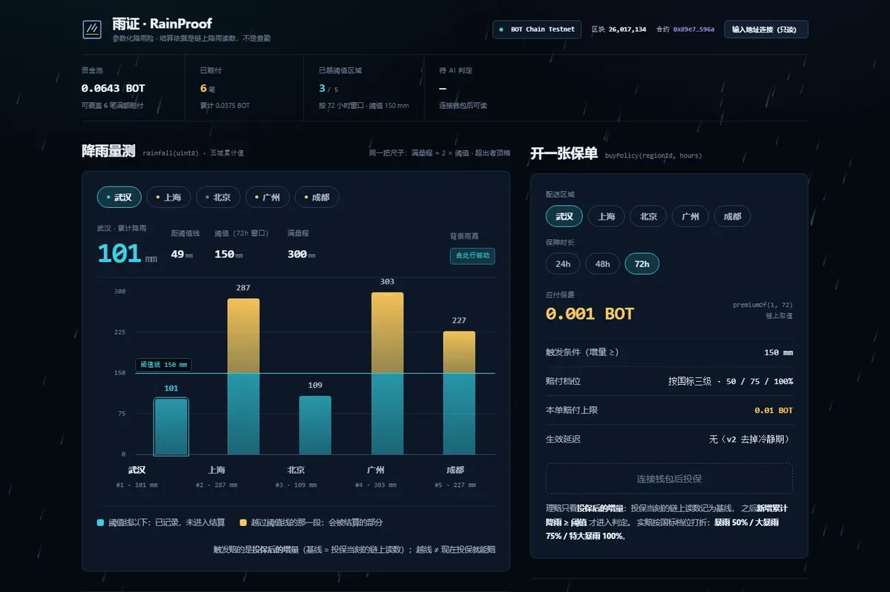
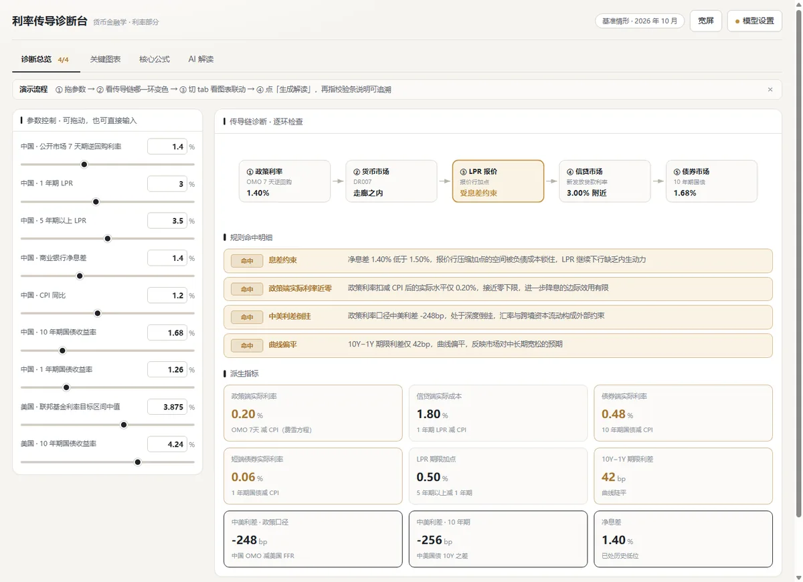

Idea 01 · 工具
会记笔记的猫 · 录音纪要助手
飞书妙记的录音转写有次数限制，为这一个功能专门开会员不划算，手机自带的录音又不好用。打算自己做一个：录音进去，出来会议纪要和待办清单。和妙记的区别想走差异化——融入猫元素，更萌一点，把重心放在使用感和交互上。
ABOUT
金融 + 计算机双学位实验班在读。一半时间在算定价和模型，一半时间在写前后端和 AI 应用——两边都沾，所以两边的事都接得上话。
金融学院学生，FMA 中南大分会学术委员会委员。要找校内的数据、流程和人的时候，我知道该去敲哪扇门。
不只是想 idea。作品集里的项目全部有可运行产物：线上跑着的服务、开源的仓库、可复现的构建流程。
中南财经政法大学 · 金融学院 · 金融 + 计算机双学位实验班 · 本科 2025.09 – 2029.06
PROJECTS
五个项目全部有对应的开源仓库，卡片展开是完整案例。
面向中南财经政法大学的校园生涯规划平台，定制版，已在校内小范围真实使用。
为什么做：想找竞赛、保研、考研的信息，东一个西一个，找不到也问不动，干脆自己做一个。
1.9万行代码128 个接口80 个专业培养方案

关键决策：分年级培养方案版本联动，学生只看自己那一届的方案，不会串届；检索刻意用轻量关键词方案、不上向量库（性价比考虑）；LLM 输出用四级容错 JSON 解析，模型输出格式不稳时逐级降级不整条失败；加 Prompt 注入护栏与「去 AI 味」约束。
规模：19 个页面 / 128 个接口 / 33 张表，前后端约 1.9 万行。培养方案覆盖 19 个学院 / 80 个专业，基础数据含 21 个学院 / 122 项竞赛。部署在自有腾讯云，nginx 同源 + pm2 + MySQL。
八字 + 吠陀占星组合解读的 Web 应用。核心诉求：结构化、按四柱分项的解读，拒绝笼统空话。
为什么做：有一阵子比较迷茫——刚好那时候有个喜欢的女孩，就更想把自己看清楚一点。以前迷茫的时候，我习惯算算命，这次干脆把它做成一个工具。
3 种排盘模式7 个解读方向200 样本回归集

关键决策：排盘全部本地计算，不交给大模型——生克方向、夫妻宫这类易错项用确定性预计算后再喂给模型；三种模式（中式八字 / 西式印占 / 双盘合参，印占失败自动降级纯八字）；一次性临时密码 + 强制改密的账号体系；200 样本排盘回归集 + 六维度 LLM 裁判 + 六阶段部署门禁的质量体系。
规模：七个解读方向（家运 / 学业 / 事业 / 婚恋 / 健康 / 合婚 / 人际），邮箱注册 + 命理档案 + 9 类关系人档案，Supabase 云库。
45–65 岁代谢综合征人群的特定疾病保险 + AI 代谢管理教练——把被传统核保拒之门外的人做成可计算、可定价、可干预的保险入口。
我的分工：4 人团队（金融学 × 金融数学），负责第 3/5/7 章正文（市场缺口 / AI 干预机制 / 合规论证）+ 交互原型。
关键决策：判定口径采用《中国糖尿病防治指南（2024 版）》；干预效果建模取 40%，比 RCT 的 51–58% 有意保守——远程 AI 干预没有同等级证据；合规红线严格卡服务成本 ≤ 净保费 20% 的监管要求。原型 v3.15 单文件 HTML，896 项回归断言全绿，手机端零溢出。
896 项回归断言≤20% 服务成本合规红线40% 干预系数保守取值

给外卖骑手的参数化降雨收入中断险：降雨量到达阈值自动触发赔付，收入中断有得算。
为什么做：骑手雨天单多、收入说断就断，出了事没人管。那就把这件事变成算得清的：降雨量到阈值，自动触发赔付。
我的分工：两人队，我负责 AI 判定、区块链设计以及前端设计。
主赛道季军483 项断言 · 17 道门禁2/3 多签 operator

关键决策：v3 主网合约（12 / 24 两档）+ 2/3 多签 operator；AI 判定用 canonical JSON 双哈希上链，第三方可复算；单文件演示站含链上核验台 + 17 道离线门禁 / 483 项断言。赛前基线打 tag，「赛前 / 赛期」边界靠 tag 说清。
说明：只做精算模型 + 产品原型验证，不宣称经营保险。这是我第一次参加黑客松类的比赛，赛前区块链零基础，赛期内从零走通了「合约部署 → 多签 operator → 链上证据链 → 核验台」。
货币金融学的利率章节，做成能动手玩的诊断台。
为什么做：老师课上讲到利率那一章，公式和传导链条光靠背很容易糊，就想着做一个和课本结合的工具，边学边用。
4/4 传导链路诊断米什金口径框架0 依赖 · 单文件

关键决策：按米什金体系 + 中国教材的口径组织分析框架，覆盖到期收益率与债券定价、久期、费雪效应、利率的期限结构与风险结构；公式全部本地实时重算，参数面板拖动即时联动传导结果，零依赖单文件部署——这也是后来所有单文件演示站的原型。
TIMELINE
2026.10
第一次参加黑客松类的比赛。两人队，我负责 AI 判定、区块链设计以及前端设计。作品「雨证 RainProof」拿了主赛道季军，BOT Chain 赛道待评。
2026
4 人团队，负责第 3/5/7 章正文 + 交互原型，作品已开源。
2026
作品为「职引」的深化版：用 WPS Comate 继续迭代校园生涯规划平台。负责作品开发与文档。
2026
队长。聚焦两条研究方向：生成式 AI 金融信任、消费信贷补贴效果。
EXPERIENCE
LESSONS
做永远大于想。
以前总觉得生成式 AI 是个很了不起的东西，直到自己入门、开始动手做项目，才发现它其实就在生活里——跟主页那句话一样，用 AI 解决让我不爽的事。
作品的灵感基本都来源于生活，这一点和写文学作品很像：素材在生活里攒着，在做事中多想、多学，让两件事互相成全。
IDEAS
都在很早期，可能烂尾，欢迎来拍砖。
Idea 01 · 工具
飞书妙记的录音转写有次数限制，为这一个功能专门开会员不划算，手机自带的录音又不好用。打算自己做一个：录音进去，出来会议纪要和待办清单。和妙记的区别想走差异化——融入猫元素，更萌一点，把重心放在使用感和交互上。
Idea 02 · 学习
把教材、课程讲义和老师的 PPT 一起丢进去，AI 先给一份能速通的整理版；时间充裕时再生成一份循序渐进的学习指南，并延伸到这门课和未来就业的连接点。两档节奏：赶 deadline 时救命，平时打底。
ORGANIZATIONS
Academic Committee · ZUEL
学术委员会委员 · 2026.07 – 至今
中南财经政法大学 FMA 学生分会（第二十八届），2008 年成立，是中国大陆首个 FMA 学生分会。隶属学术委员会，参与校内学术活动与竞赛资源的组织。
GP · Wuhan
GP · 2026.09 – 至今
武汉发起、辐射全国的 AI 活动执行与资源对接平台，不绑定单一高校。通过高频稳定的联系，把 AI 创造者推进真实场景：开源项目、商业合作、实习、创业。
Campus Lead · ZUEL
筹办中 · 主要推动人
正在筹办的校内 AI 社团，作为具现的校内落地端口，连接校本资源与社群活动。
CONTACT
一起做点实事。
开源仓库： career-planner · xuanjige · metabolic-guardian · rainproof · monetary-finance-rates